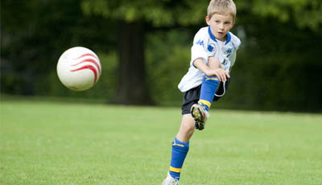

For men and women
Specialising in the following:
- The benefits of weight training include greater muscular strength, improved muscle tone and appearance, increased endurance and enhanced bone density.
- Many people take up weight training to improve their physical attractiveness. Most men can develop substantial muscles; most women lack the testosterone to do it, but they can develop a firm, "toned" (see below) physique, and they can increase their strength by the same proportion as that achieved by men (but usually from a significantly lower starting point). An individual's genetic make-up dictates the response to weight training stimuli to some extent.
- The body's basal metabolic rate increases with increases in muscle mass[citation needed], which promotes long-term fat loss and helps dieters avoid yo-yo dieting. Moreover, intense workouts elevate metabolism for several hours following the workout, which also promotes fat loss.
- Weight training also provides functional benefits. Stronger muscles improve posture, provide better support for joints, and reduce the risk of injury from everyday activities. Older people who take up weight training can prevent some of the loss of muscle tissue that normally accompanies aging.
- Strength training helps to maintain good flexibility. The ability of the body to resist the stresses that can result from an injury can be increased by obtaining a greater amount of strength. That is true in the athletic world and it has its advantages in performing everyday activities, such as lifting or carrying objects. Strength contributes to the overall efficiency of the human body. Starting a strength training program means you have started a new lifestyle because strength is reversible. It will decline if you do not continue to obtain a strength stimulus throughout your entire life.
For kids
 The current position on youth resistance training is that a properly designed and supervised training program is safe and can help to increase strength, prevent injury, and enhance motor skills and performance. It is very important that coaches of juniors at any level have a clear understanding of what should and shouldn’t be done.
In 2003 Narelle Sibte, Australian Institute of Sport Strength and Conditioning coach provided an article for the Australian Sports Commission’s Sports Coach magazine about pre adolescent strength training. Key recommendations from the article include:
-Strength training for pre-adolescent athletes should focus on skills and technique.
-Children should work on strengthening all the big muscle groups, using free weight and body weight movements with relatively light loads.
-Adolescents should initially perform one to three sets of 6-15 repetitions of a variety of exercises, beginning with a frequency of 2-3 days per week on non-consecutive days.
More info »
For athletes
- Stronger muscles improve performance in a variety of sports. Sport-specific training routines are used by many competitors. These often specify that the speed of muscle contraction during weight training should be the same as that of the particular sport.
- A sneak peak from my Train Like a Pro eBook: On Strength and Conditioning for Athletes.
The body is an astonishing mechanism adapting to the form of work you apply to it, both mentally and physically. Weight training increases bone density and muscular strength and power, for fighters this is not just important, it is critical, because it will increase your punching power, your ability to take punches, your ability to handle impact, your risk of fractures is lowered, your risk of injury is reduced, and your muscles are toned at the same time. Any type of athlete can apply the same principles to their training to achieve powerful results. - “You only grow in any aspect of your life by continually pushing against a greater resistance”
- More info »